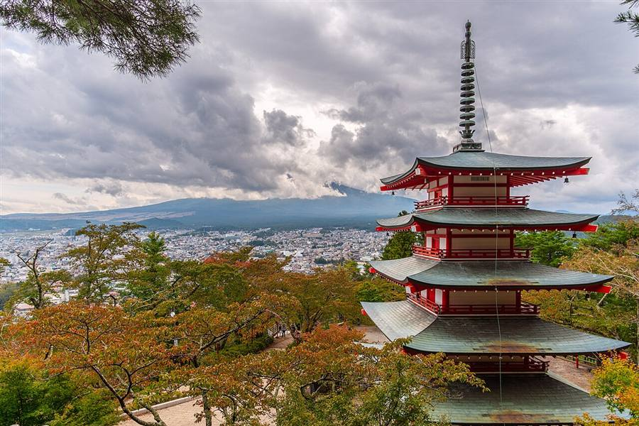

Japón 2027
Del 5 al 25 de noviembre de 2027. Un grupo de amigos, bases en Tokio, Kioto y Osaka, una noche al pie del Fuji, otra en Miyajima, excursiones de ida y vuelta y dos noches con mochila por los Alpes japoneses.

Dónde estamos cada día
Tocá un díaTocá un día en el calendario o en la línea de tiempo y el mapa marca el recorrido de ese día.
Línea de tiempo
21 díasArriba, cada franja es un hotel y cuántas noches dormimos ahí. Abajo, a dónde vamos cada día.
Los Mugiwara
Nivel de poder del grupo: ¡más de 9.000! Tripulación de 12, cada uno con su tipo, como en la Pokédex. La bandera es nuestra: calavera con vincha japonesa.
La bitácora, día por día
21 díasCada lugar tiene su nivel, así el día se puede achicar en la calle sin pensar:
Cargando la bitácora…
Guía de bolsillo
Para leer antes de irLo que conviene saber para no quedar como turista. Cada día que lo necesita tiene el atajo hasta acá.
Reservas y plata
DetalleReservas clave
Todo pendiente| Qué | Cuándo se reserva | Día |
|---|
Presupuesto estimado
US$ por persona| Rubro | Bajo | Medio | Alto |
|---|